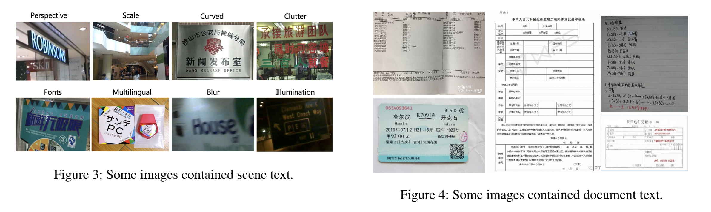
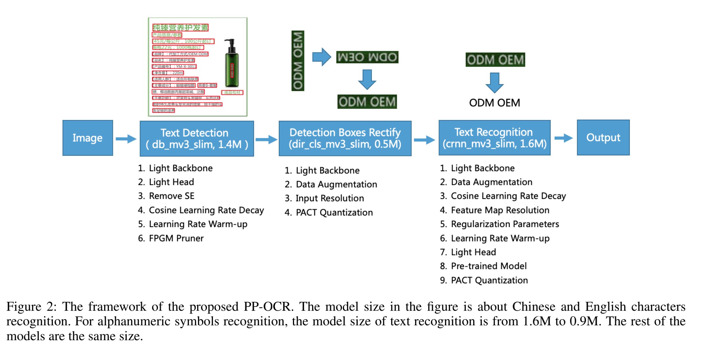
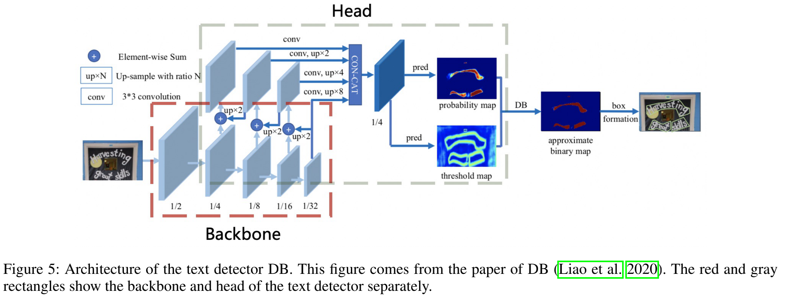
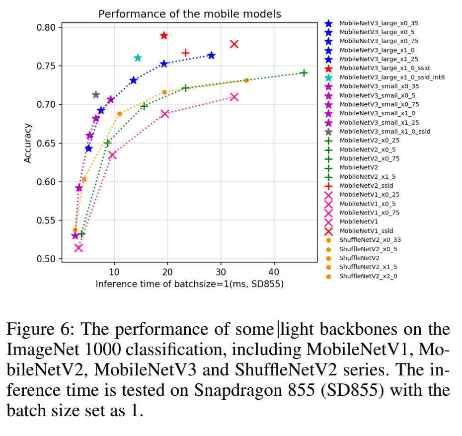
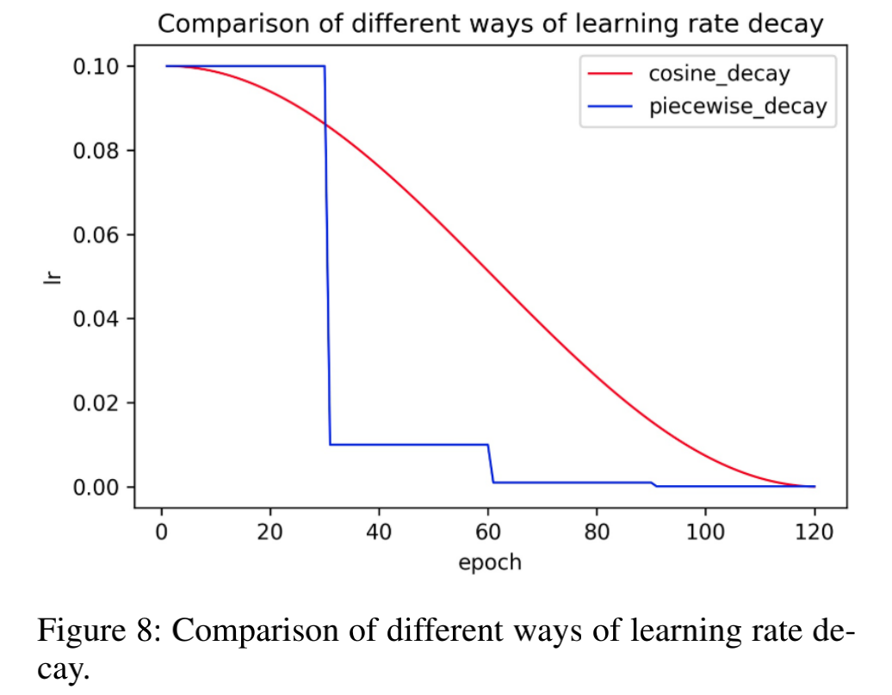
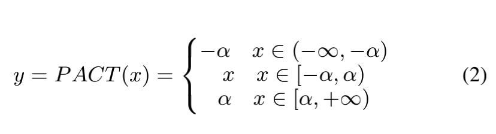
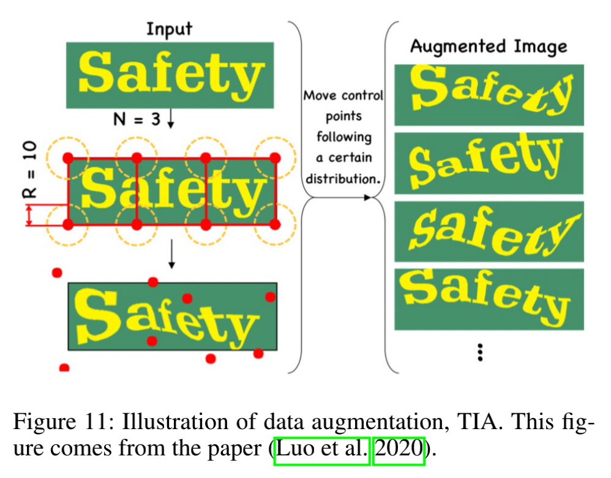
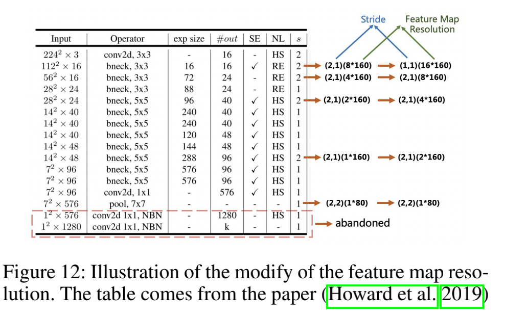
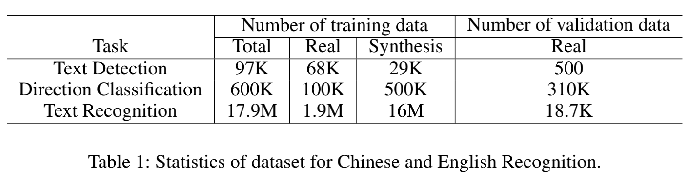
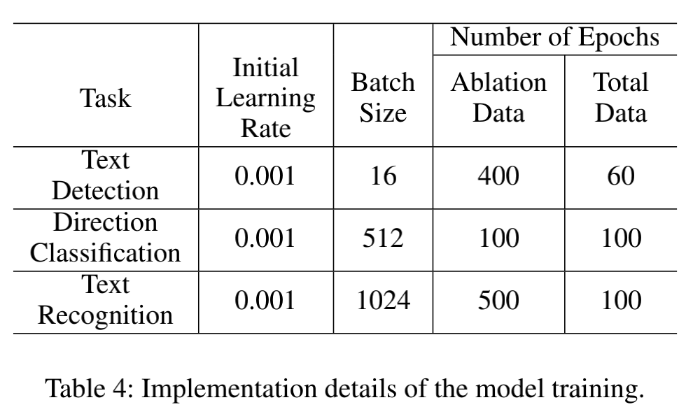

PP-OCR 在识别6622个中文字符模型尺寸有3.5M，63个字母数字符号的模型有2.8M。该论文在增强模型能力和减少模型尺寸方面做了很多尝试。同时随着论文放出了多个模型英文和中文模型，其中包括text detector【97K images are used】、direction classifier【600K images are used】、text recognizer【17.9M images are used】
文本出现的多种形态：scene text and documen text。scene text: 自然场景中的文本，通常会因透视、缩放、弯曲、杂乱、字体、多语言、模糊、照明等因素而发生显著变化；documen text: 在实际应用中更为常见。举例如下：
Computational Efficiency 是OCR系统的重要指标。
PP-OCR框架示意图
PP-OCR是由三部分组成：text detection，detected boxes rectification，text recognition。具体如下图所示：

Text Detection
这部分主要作用是定位图片中文本区域，我们使用的是Differentiable Binarization【基于分割的思想】作为text detector。为了更好的提高效果和效率，使用了以下6个策略：light backbone, light head, remove SE module, cosine learning rate decay, learning rate warm-up, and FPGM pruner。最终这部分模型尺寸较少到1.4M。
Architecture of the text detector DB:

Detection Boxes Rectify
text box需要被转换成水平矩形，才可以进行后续的Text Recognition。通过几何变换就可以较为简单得实现这种变换。但是也有可能导致翻转。因此此分类器需要判断出text box的方向。为了更好的提高效果和效率，使用了以下4个策略：light backbone, data augmentation, input resolution and PACT quantization。 最终, 模型大小：500KB
Text Recognition
我们使用CRNN作为Text Recognition。该模型被广泛的使用。CRNN集成了特征抽取和序列模型，使用了CTC loss。为了更好的提高效果和效率，使用了以下4个策略：light backbone, data augmentation, cosine learning rate decay, feature map resolution, regularization parameters, learning rate warm-up, light head, pre-trained model and PACT quantization。中英文识别模型大小：1.6M, 数字字母模型大小：1.6M
训练各个模型大小所使用的数据集：text detection dataset has 97K images. Direction classification dataset has 600k images. Text recognition dataset has 17.9M images
Enhancement or Slimming Strategies
Text Detection
Light Backbone
backbone的大小是模型大小的主要影响因素。随着图片分类的发展，MobileNetV1、MobileNetV2、MobileNetV3和ShuffleNetV2系列是常用的轻量级backbone。PaddleClas提供了超过20种backbone在CPU上的推理时间和精度。论文中采用了MobileNetV3 large x0.5为backbone。

Light Head
Text Detection的头部与FPN在目标检测中的架构类似，并融合不同尺度的特征映射，以增强小文本区域检测的效果。inner channels对模型尺寸有很大影响，当从256减少到96时，模型尺寸从7M减少到4.1M，但是精度略有下降。
Remove SE
SE的全称是squeeze-and-excitation。SE可以明显提高视觉任务的准确性，但是MobileNetV3包含了很多SE模块。但是当输入分辨率较大时，比如640 × 640,SE模块对精度的提高有限，但是时间花费特别巨大。当移除了SE模块后，模型尺寸从4.1M减少到2.5M。但是精度没有影响。
Cosine Learning Rate Decay
Learning Rate用来控制learning speed，在训练的早期，模型权重处于随机初始化状态，可以设置一个较大的学习率加快收敛。在训练的后期，权重接近最优值，可以设置一个较小的学习率。Cosine learning rate decay是一个非常好的选择。与piecewise decay对比：
Learning Rate Warm-up
learning rate warm-up提高了分类模型的精度。模型刚开始训练的时候，使用较大的学习率会变得不稳定的，因此学习率应当设置很低。
FPGM Pruner
Pruning是另外一个提高模型性能的方法，为了避免模型性能下降，我们采用了FPGM Pruner找到不重要的子网络，每层的压缩比对于修剪模型也很重要，均匀修剪每一层通常会导致性能显著下降。
Direction Classification
本部分介绍了一些增强模型性能和减少direction classifier模型尺寸的方法
Light Backbone
使用MobileNetV3 作为 backbone，与text detector相同。我们使用了MobileNetV3 small x0.35平衡了精度与效率，如果使用较大的backbone，精度并没有提升。
Data Augmentation
常用的数据增强手段：旋转、透视失真、运动模糊和高斯噪声。这些过程一般称为DBA【Base Data Augmentation】.图像分类任务中，提出了一些新的数据增强操作。比如：AutoAugmentAutoAugment, RandAugment, CutOut, RandErasing, HideAndSeek, GridMask, Mixup,and Cutmix。但是在实验表明，多数操作对direction classifier没有作用，除了RandAugment and RandErasing. RandAugment。最终，我们使用了BDA和RandAugment用于训练direction classifier。
Input Resolution
一般来说，当图像的分辨率增加时，精度也会提高。由于backbone非常轻，适当提高分辨率不会导致计算时间明显增加。在之前的text recognition任务中，图像的高度和宽度分别是32和100；在PP-OCR中，图像的高度和宽度分别设置是48和192。
PACT Quantization
Quantization使神经网络工作模型具有更低的延迟、更小的体积和更低的计算功耗。目前，量化主要分为两类：离线量化和在线量化。离线量化是指：使用KL divergence和moving average等方法来确定量化参数，并且不需要重新训练。在线量化是指：在训练过程中确定量化参数，它可以提供比离线量化模式更少的量化损耗。
PACT (PArameterized Clipping acTivation)是一种在线量化的方法，可提前从激活值中移除一些异常值。剔除异常值后，该模型可以学习更合适的值。
普通PACT方法的激活值预处理基于ReLU函数,但是在MobileNetV3中除了ReLU还有hard swish。使用普通PACT量化会导致更高的量化损耗。因此，我们对激活预处理公式进行修改，具体如下图所示：
我们使用改进的PACT量化方法对方向分类器模型进行量化，FPGM Pruner和PACT quantization都是基于PaddleSlim。PaddleSlim是一个模型压缩工具箱，其包含了一系列的压缩方法，比如pruning, fixed point quantization, knowledge distillation, hyperparameter searching neural architecture search。
Text Recognition
本部分介绍了一些增强模型性能和减少Text Recognition模型尺寸的方法
Light Backbone
此处也是使用了MobileNetV3，如果对模型尺寸不敏感，MobileNetV3 small x1.0也是一个不错的选择，模型大小虽然增加了2M,但是精度却有明显提升。
Data Augmentation
在早期的text recognition任务中，BDA经常被使用。现在的text recognition任务中TIA也是经常用到的。首先，在图像上初始化一组基准点。然后随机移动这些点，通过几何变换生成新图像。在PP-OCR中的text recognition，我们使用了BDA和TIA两种数据增强方式。TIA介绍：
Cosine Learning Rate Decay
Cosine Learning Rate Decay已成为首选的学习率降低方法。实验表明，余弦学习速率衰减策略也能有效地提高text recognition的模型能力。
Feature Map Resolution
CRNN输入的高度和宽度设置为32和320，因此，原始MobileNetV3的步幅不适合文本识别。需要针对特定层的步幅进行调整，具体如下图所示：
Regularization Parameters
为了避免过拟合，许多正则化的方式被提出，weight decay是最被广泛使用的一种，在损失函数中增加L2 regularization。在L2正则化的帮助下，网络的权重趋向于选择较小的值，最终整个网络中的参数趋向于0，模型的泛化性能也相应提高。对于文本识别，L2 decay对Text Recognition的准确性有很大影响。
Learning Rate Warm-up
实验表明使用该策略也是有效的
Light Head
全连接层用于将序列特征编码为预测字符。序列特征的维数对模型大小有影响，尤其是对于6000多个字符的中文识别。同时，并不是维度越高，序列特征表征能力越强。在PP-OCR中，序列特征的维数设置为48.
Pre-trained Model
如果训练数据较少，则对现有网络进行微调。图像分类和目标检测中的迁移学习表明了上述策略的有效性。在真实场景中，训练数据通常是有限的。如果使用数千万个样本对模型进行训练，即使它们是合成的，使用上述模型也可以显著提高精度。
PACT Quantization
我们使用了与direction classification相似的Quantization方式减少模型尺寸，但是跳过了LSTM层。由于LSTM量化的复杂性，目前不会对这些层进行量化。
Experiments
3.1 Experimental Setup
对于 text detection，有97k个训练图像和500个验证图像。在训练图像中，68K是真实场景图像，其来自一些公共数据集和百度图像搜索。剩下的29K是合成图像，其主要集中在长文本、多方向文本和表格文本的场景。所有验证图像均来自真实场景。
在direction classification中，有600k训练图像和310K验证图像。训练图像中，100K是真实场景图像，来自公开数据集（LSVT, RCTW-17, MTWI 2018），主要是水平文本。剩余的500K合成图像主要集中在反向文本上，我们使用垂直字体合成一些文本图像，然后水平旋转它们。所有验证图像均来自真实场景。
在text recognition中，有17.9M训练图像和18.7K验证图像。在训练数据中，有1.9M是真实场景图像，来自公开数据集（LSVT, RCTW-17, MTWI 2018 and CCPD 2019）。剩下的16M数据来自于合成数据，主要关注不同背景的场景、平移、旋转、透视变换、线条干扰、噪声、垂直文本等。合成图像的语料库来源于真实场景图像。所有验证图像也都来自真实场景。
数据集细节: 
Implementation Details
我们使用Adam优化器训练所有模型，并且使用cosine learning rate decay作为学习率调度。使用FPGM pruner和PACT quantization用来减少模型尺寸。训练时候的参数细节: 
在推理阶段，HMean用于评估text detector的性能。Accuracy用于评估direction classifier或text recognizer的性能。F-score用于评估OCR系统的性能。为了计算F-score应该考虑：准确的位置和相同的文本。